Pawprint
Pawprint was designed around a simple observation: The hardest part of rescue work is often coordination, not compassion.
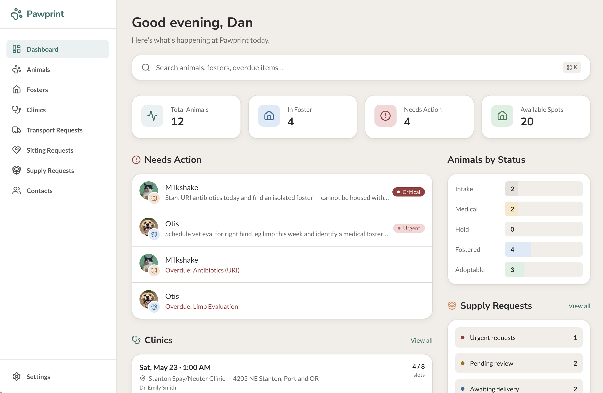
Overview
Many foster-based rescues operate through a patchwork of Slack messages, spreadsheets, shared drives, text chains, and informal institutional knowledge — patterns I became deeply familiar with while volunteering in animal rescue. Critical workflows — foster placement, transportation, clinic planning, sitter coordination, supply requests, and medical tracking — are often fragmented across multiple tools with little operational visibility.
Pawprint explores how thoughtful workflow design and systems-oriented UX can reduce that coordination burden without losing the flexibility and humanity rescue work requires.
Instead of forcing rigid enterprise-style processes, the product was intentionally designed around the messy, real-world realities of foster operations:
- animals changing foster homes
- emergency transport coordination
- weekly clinic scheduling
- temporary foster coverage
- multi-animal placements
- rapidly changing medical states
- volunteer-driven communication
The goal was building software that feels operationally powerful while remaining calm, flexible, and humane.
What I Focused On
This project focused less on basic record management and more on operational coordination.
The primary design goal was to reduce organizational overhead for foster-based rescues without making the workflows feel rigid, bureaucratic, or overly “enterprise.”
Instead of treating the system as a collection of disconnected CRUD screens, I focused on:
- Operational clarity
- Timeline-driven workflows
- Humane data modeling
- Flexible placement management
- Cross-functional coordination
- Volunteer usability
- Reducing communication fragmentation
A major challenge was balancing structure with flexibility.
Real rescue operations are dynamic:
- animals move between foster homes
- clinic schedules shift
- transportation logistics change daily
- volunteers temporarily cover placements
- supply requests often support multiple animals simultaneously
The system needed to support those realities without forcing users through rigid administrative processes.
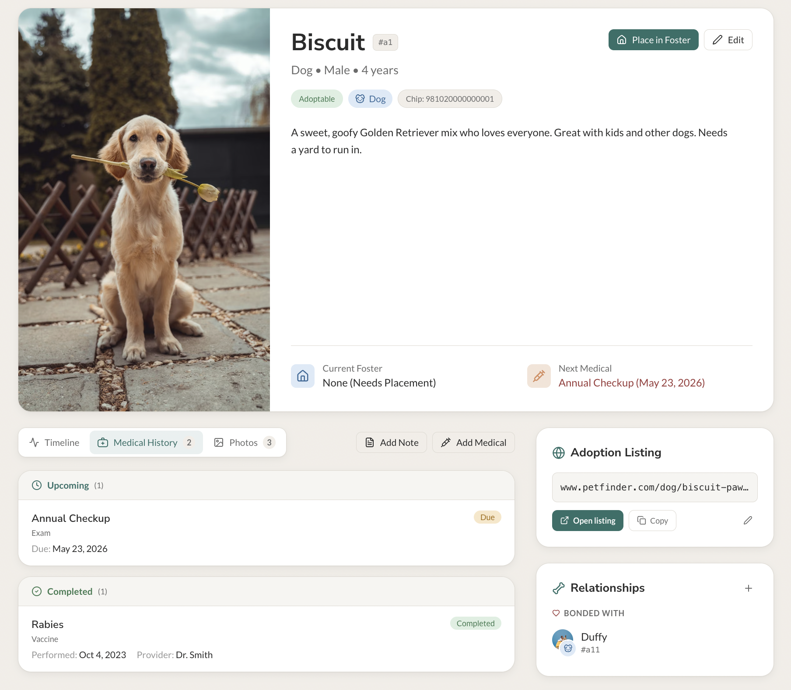
Key areas:
- Designing placement and foster workflows around real rescue operations
- Creating timeline-based operational visibility
- Building flexible request systems for supplies, transportation, and sitter coverage
- Modeling foster placement history without creating administrative friction
- Designing calm interfaces for high-context operational work
- Reducing Slack- and spreadsheet-driven coordination overhead
- Creating scalable workflows without sacrificing usability
Product & UX Decisions
Foster placements as first-class operational objects
One of the most important architectural decisions was treating foster placements as distinct operational entities rather than simple fields attached to an animal record.
Animals frequently move between foster homes due to:
- medical needs
- behavioral concerns
- volunteer availability
- emergency overflow
- temporary sitter coverage
Tracking placement history became operationally important for continuity, accountability, and historical context.
Instead of overwriting a single “current foster” field, the system models:
- active placements
- historical placements
- placement timelines
- temporary coverage periods
- reassignment events
This allowed the UI to present foster history as a coherent operational timeline instead of disconnected administrative updates.
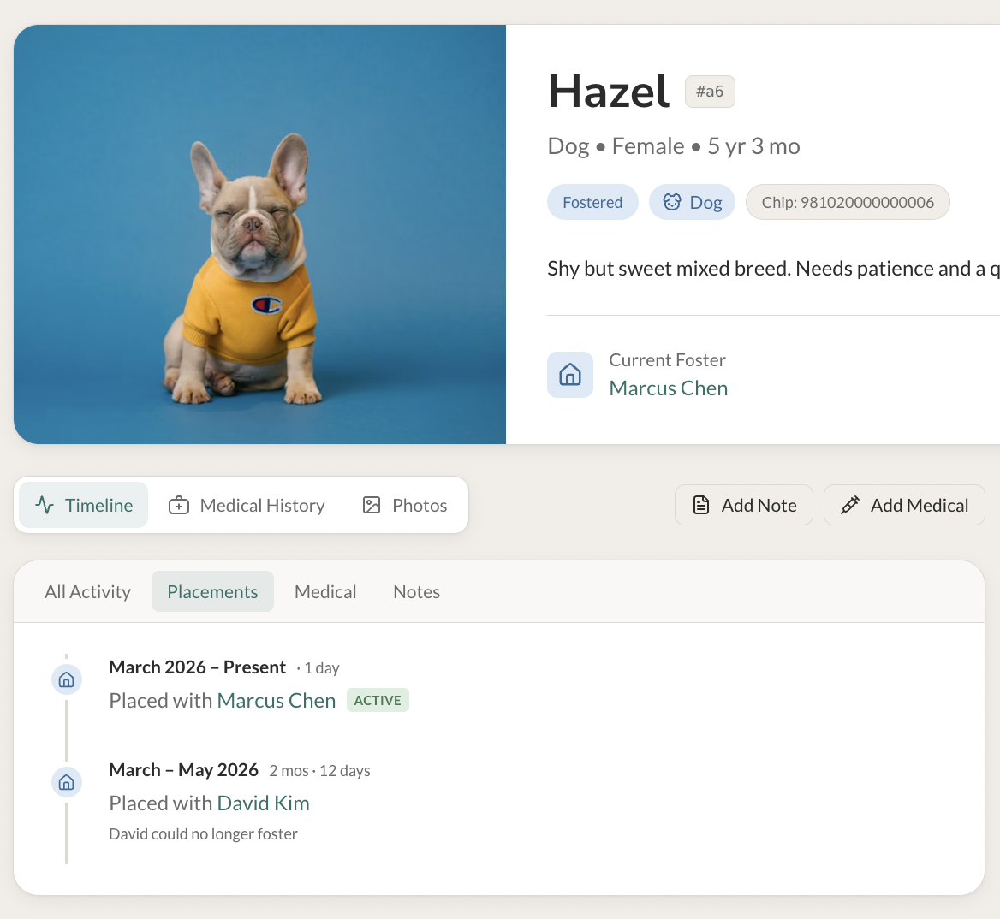
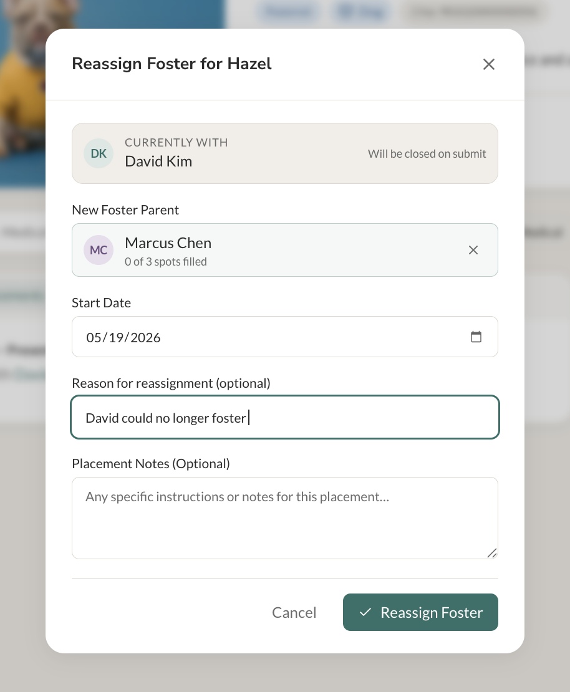
Designing for real rescue workflows instead of theoretical normalization
A recurring product challenge was resisting the temptation to over-structure workflows in ways that looked clean technically but created friction operationally.
For example:
- supply requests are often for entire foster groups rather than individual animals
- sitter requests may apply to multiple placements simultaneously
- transportation requests may involve animals, supplies, or both
- clinic coordination changes rapidly based on available slots and trapping outcomes
In many cases, strict one-to-one relational modeling would have made the workflows slower and less humane to use.
The goal became:
normalize where it helps the humans — not just where it helps the database.
This philosophy heavily influenced:
- request design
- placement workflows
- timeline structures
- multi-animal operational flows
- flexible notes and coordination systems
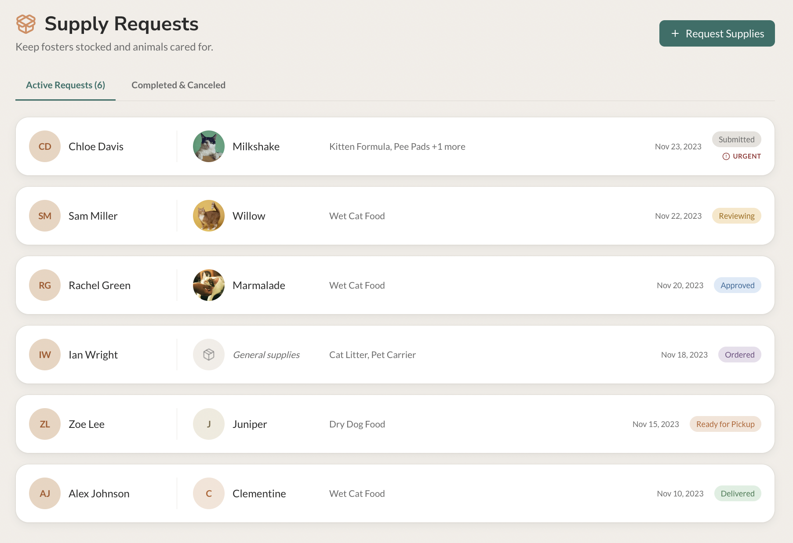
Timeline-driven operational visibility
The timeline became the backbone of the animal detail experience.
Rather than separating operational history across multiple disconnected tabs, the system organizes activity chronologically:
- intake
- foster placement
- medical updates
- notes
- clinic events
- transportation activity
This creates a clearer mental model for volunteers and coordinators:
What happened to this animal, and what happens next?
To reduce noise, the timeline supports filtered operational views:
- All Activity
- Placements
- Medical
- Notes
This preserves clarity while still allowing focused operational review.
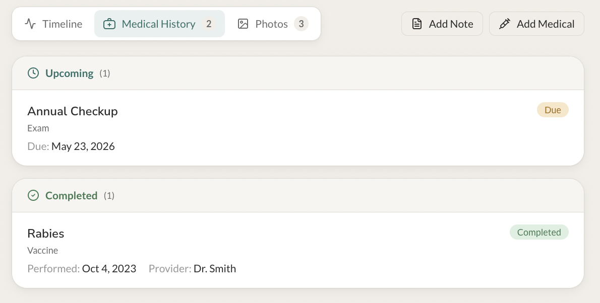
Transportation and temporary coverage as coordinated workflows
One of the biggest operational insights from real rescue organizations was how much coordination work happens outside formal systems.
Transportation requests and temporary foster coverage are often managed through:
- Slack messages
- text chains
- spreadsheets
- informal volunteer memory
Pawprint introduces structured coordination workflows while intentionally keeping them lightweight.
Examples include:
- requesting temporary sitter coverage
- coordinating animal transport between fosters
- requesting supply pickup assistance
- tracking clinic transport dependencies
The goal was reducing communication chaos without making volunteers feel like they were filing enterprise tickets.
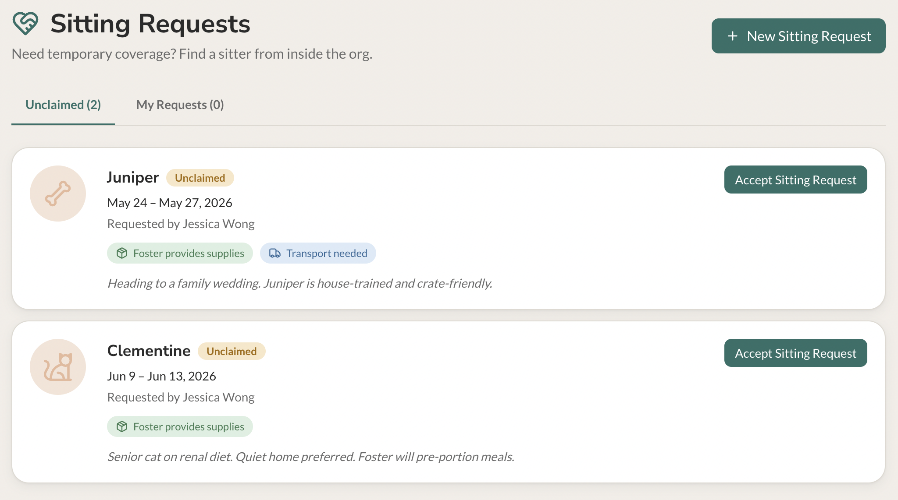
Clinic coordination as an operational system
Clinic planning became one of the most systems-oriented areas of the project.
Trap-neuter-return (TNR) organizations frequently coordinate:
- limited clinic capacity
- scheduled intake days
- transport logistics
- volunteer assignments
- medical readiness
- foster placement availability
These workflows are often managed manually through spreadsheets and Slack coordination.
The clinic planning system explores:
- scheduled clinic events
- slot management
- animal assignment workflows
- linked transport coordination
- veterinarian and location tracking
- operational readiness visibility
Rather than treating clinics as isolated appointments, the system models them as operational coordination hubs.
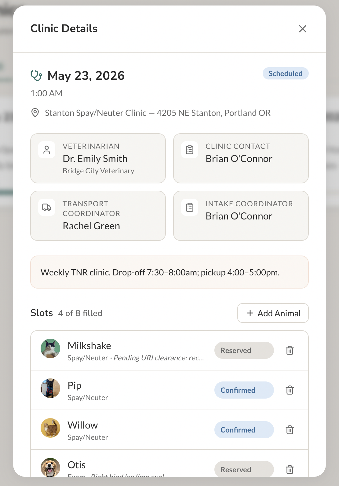
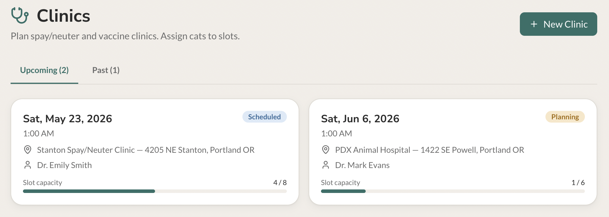
Visual & Interaction Design
The visual system was intentionally designed to feel calm, trustworthy, and operationally clear.
Many operational tools become visually overwhelming because every workflow competes equally for attention.
Pawprint instead prioritizes:
- strong hierarchy
- restrained color usage
- soft surfaces
- clear spacing systems
- timeline continuity
- lightweight status signaling
The goal was making operational work feel approachable rather than administrative.
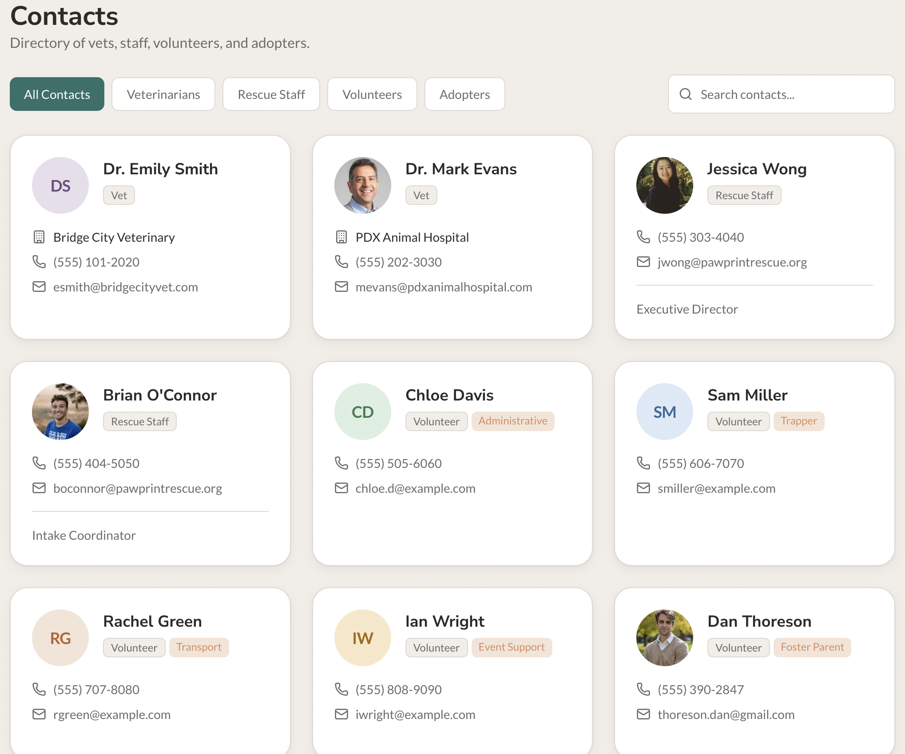
Interaction principles
- Calm operational density
- Minimal visual noise
- Flexible workflows over rigid forms
- Clear activity hierarchy
- Progressive disclosure
- Fast scanning for coordinators and volunteers
- Reduced cognitive overhead during high-volume operational work
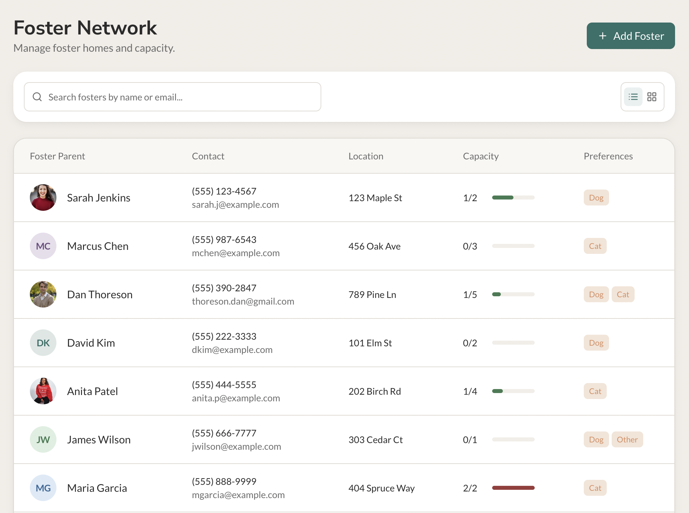
Systems Thinking
Although Pawprint is currently a front-end portfolio project, the system was intentionally designed around realistic operational architecture.
The platform assumes coordination across:
- foster placements
- volunteer management
- transportation logistics
- medical workflows
- clinic scheduling
- supply coordination
- operational timelines
The primary systems challenge was not simply storing data correctly.
It was designing workflows that reflected how rescue organizations actually operate in practice.
For example:
- a clinic assignment may require transportation coordination
- transportation availability impacts placement timing
- sitter coverage may temporarily alter placement responsibility
- supply requests often correlate with placement density
- medical readiness influences adoption eligibility
These operational dependencies shaped both the information architecture and the interaction design.
A core project goal was ensuring that:
operational complexity becomes understandable instead of overwhelming.
Trade-offs
This portfolio version intentionally prioritizes workflow quality and operational modeling over full production completeness.
The current implementation uses:
- curated operational scenarios
- simplified backend assumptions
- simulated rescue data
- constrained workflow paths
This allowed the project to focus on:
- interaction quality
- operational clarity
- state transitions
- workflow coherence
- systems-oriented UX
…rather than generic administrative tooling.
Why this approach
Building fewer workflows with stronger operational realism created a more meaningful exploration than attempting to build a generic all-purpose animal database.The goal was demonstrating how thoughtful product design can improve real coordination-heavy operational environments.
Result
Pawprint became an exploration of how operational systems can remain humane, flexible, and approachable even as organizational complexity grows.
The project reflects my interest in building products where:
- UX
- frontend engineering
- workflow design
- operational systems
- information architecture
- state modeling
…all reinforce each other instead of existing separately.
Rather than treating rescue work as a collection of forms and records, Pawprint approaches it as a living operational system centered around coordination, trust, and care.
— Dan Thoreson